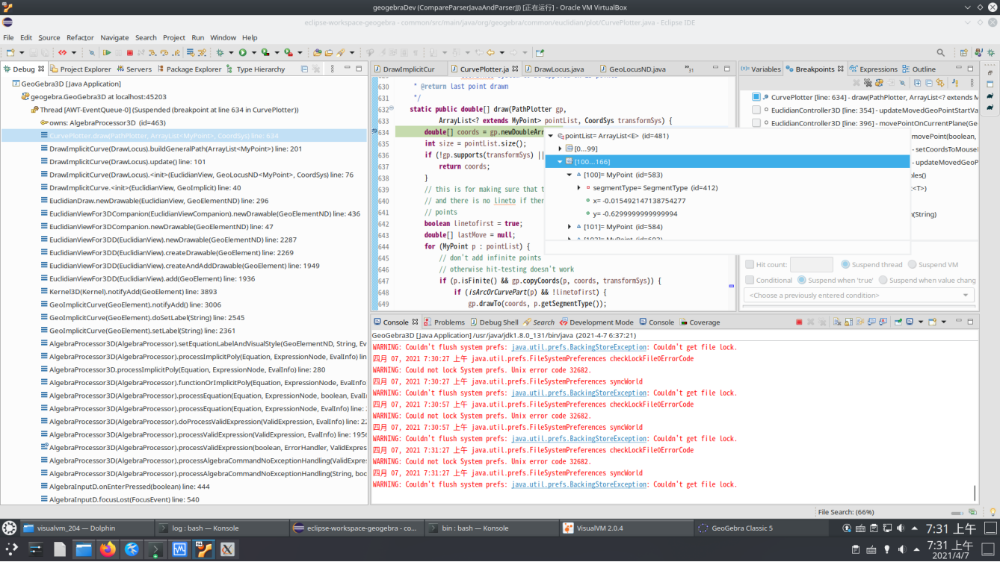
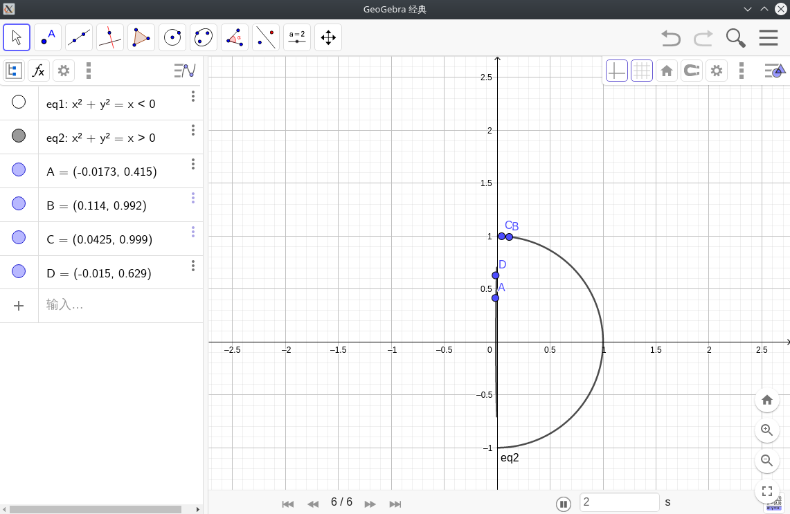
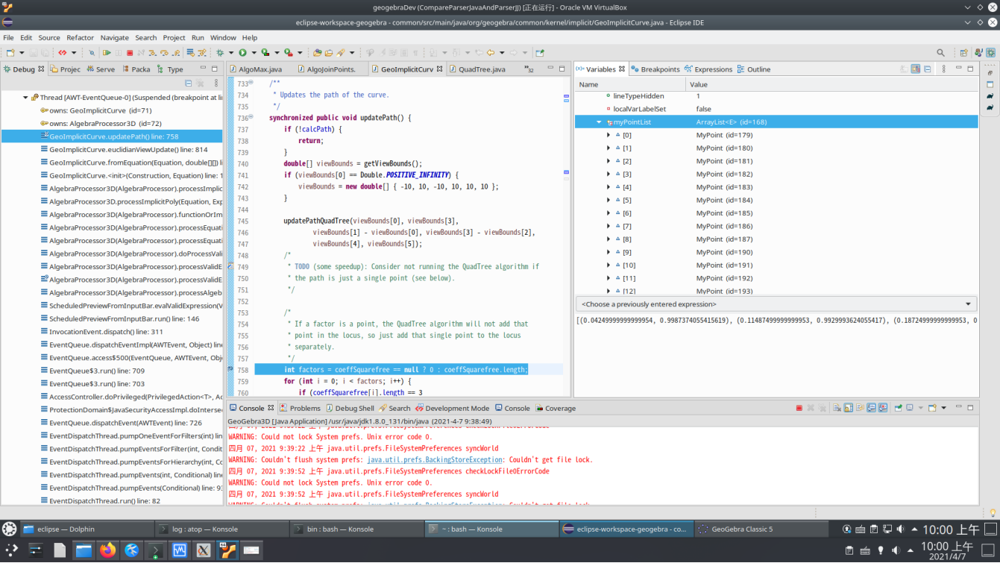
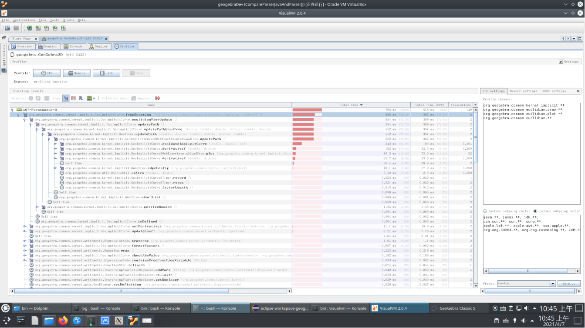
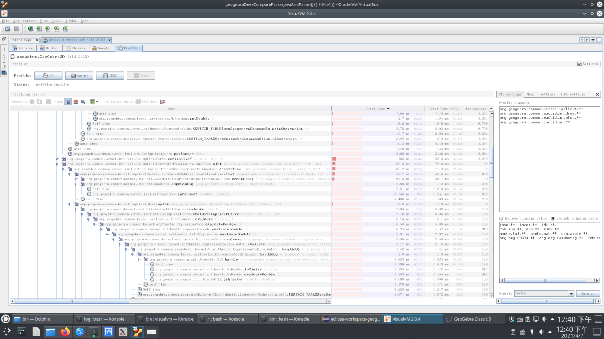
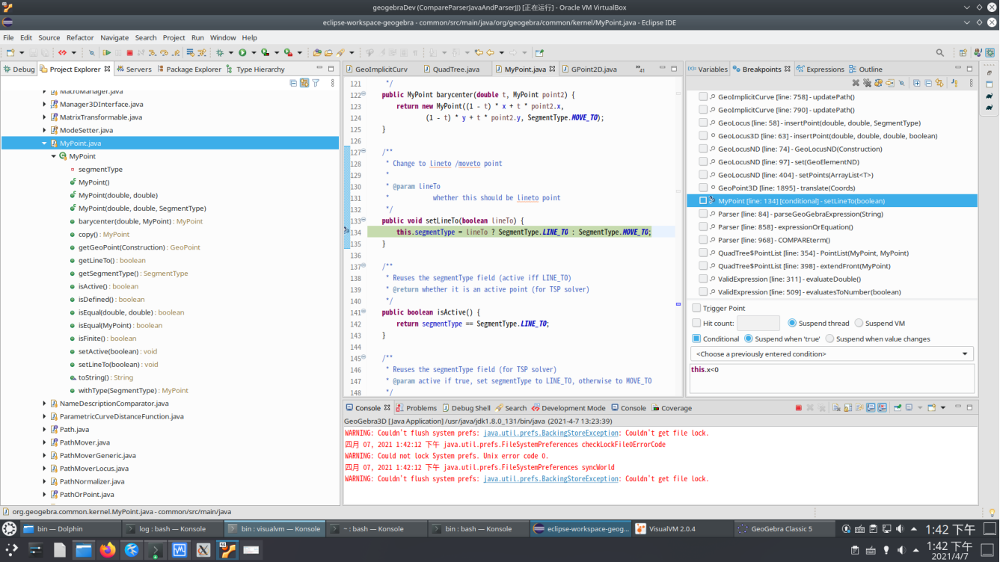
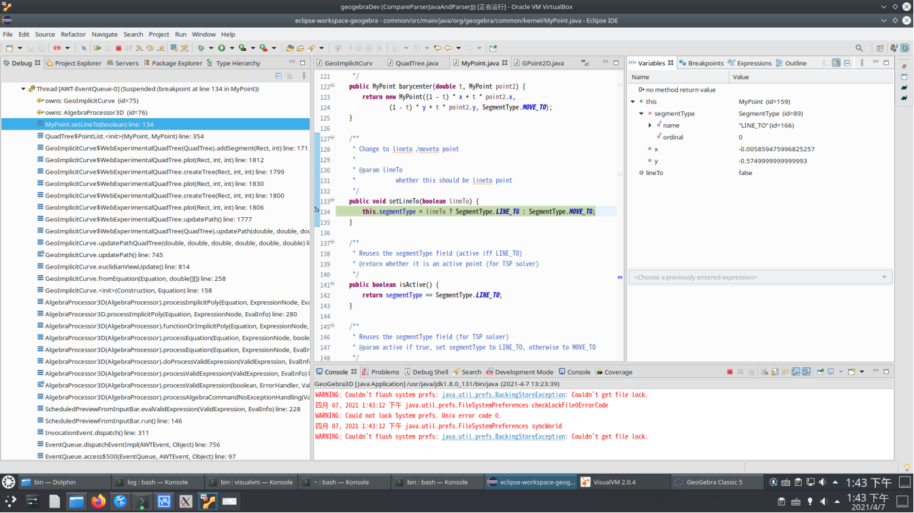

这个问题：https://www.zhihu.com/question/446095183/answer/1820032389 ， 为啥 x^2+y^2=x>0 就会出现 意外的部分，而 x^2+y^2= 1/(x>0) 就不会，我来尝试从代码上找找原因：
当我把断点设在 CurvePlotter.draw 里面，可以看到需要 plot 的 pointList 里面包含有 x 坐标为负的点：

而知乎问题上说的“中间的蓝线”，其实可能就是这些个 x 坐标为绝对值很小的负数的点：

至于我一开始为啥会在 draw 上面设断点， 除了读官方的简要开发概述文档， 就是用VisualVM Profiler 配合 Debugger 是逐步“迭代”，定位代码。
另外，对于这个问题， geogebra 的代数输入窗口在你只输入部分内容后就启动绘图，给调试带来不便，我是把整个代数式在外部输完，然后粘帖到 geogebra 里的。
在 GeoImplicitCurve.updatePath() 里面设断点，会发现，代码调用完 updatePathQuadTree 方法（下图745行），myPointList 变量里就会填满点坐标， 说明根据代数式计算要plot 的点，是发生在这里的：

再分析 Profiler 结果， 这看上去就像个递归迭代过程，代码被执行了几百几千次：


网上搜这个 “implicit curve quadtree” , 可以找到这个算法简介：http://shamshad-npti.github.io/implicit/curve/2015/10/08/Implicit-curve/ , 不过我还没搞明白呢。
再回到Eclipse里调代码， 这次断点设在 MyPoint.setLineTo 上面，并且断点加上 Condition（中断条件）： this.x<0 , 也就是遇到 x 坐标为负的点才中断：

断点击中后，从调用栈里，也许我们可以分析出为啥一个 x 为负的点也会被算法从 x^2+y^2=x>0 里求出来。

若是粘贴进代数式 x^2+y^2= 1/(x>0) ， 我们会发现，这个断点根本不会停。 其实这也容易理解， 因为 1/(x>0) 在x为负时会发生被0除错误，所以x不能小于0。